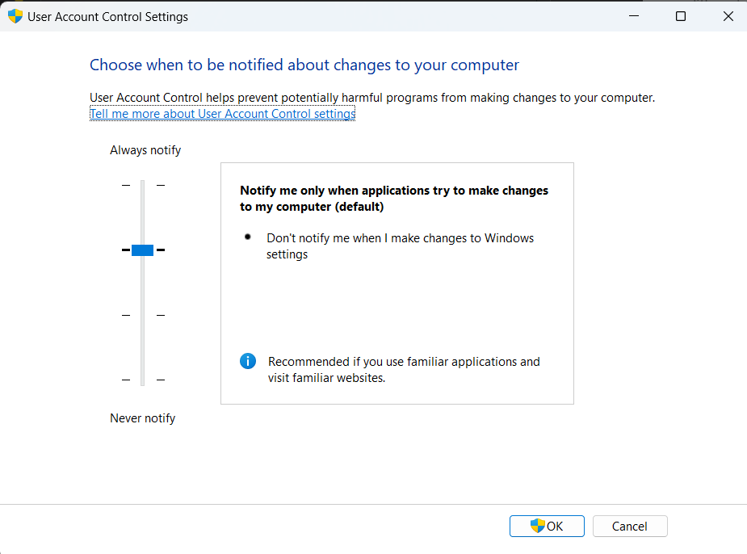

Deel 1 — Introductie en installatie
1. Waarom scripting?
Leg in je eigen woorden uit waarom scripting nuttig is voor systeem- en netwerkbeheer. Geef minstens vier concrete voordelen of toepassingsgebieden.
Ik vind scripting nuttig voor systeem- en netwerkbeheer omdat wij repititieve taken moeten kunnen automatiseren.
Het automatiseren van taken kan ons in de praktijk zeer veel tijd besparen.
Het verkleint de kans op menselijke fouten aanzienlijk omdat het script - na het uitvoeren van grondige testen - altijd hetzelfde restultaat zal opleveren.
Het uitvoeren van wekelijkse of maandelijkse updates op een groot aantal computers kan met een script in een enkele minuten doorgevoerd worden, wanneer je dit handmatig zou doen, kan dit uren in beslag nemen.
Maar ook het wekelijks of soms dagelijks maken van back-ups kan met een script geautomatiseerd worden.
2. Package managers
2.1 Wat is een package manager?
Omschrijf wat een package manager is en welke taken deze voor de gebruiker automatiseert.
Een package manager is een softwareprogramma waarmee je softwarepakketten kan downloaden en installeren. Het voordeel hieraan is dat je niet op zoek moet gaan op het internet naar de correcte versie van de software en dat je weet dat je altijd een veilige en correcte versie van de software download.
2.2 Waarom gebruik je een package manager?
Geef minstens drie voordelen ten opzichte van handmatig software downloaden en installeren.
1. Alle softwarepakketten vind je op een plaats.
2. Alle softwarepakketten zijn veilig en je weet dat je het niet download via een onbetrouwbare bron.
3. De package manager zorgt voor automatische updates en beheer van de geïnstalleerde software.
2.3 Installeer software met een package manager
Zoek en installeer de volgende software. Noteer voor elk pakket welke package manager en welke commando's je gebruikte.
2.3.1 PowerShell 7.x
winget install --id Micrososft.Powershell --exact --source winget
2.3.2 Windows Terminal
winget install --id Microsoft.WindowsTerminal --exact --source winget
2.3.3 Visual Studio Code
winget install --id Microsoft.VisualStudioCode --exact --source winget
2.3.4 Een Windows-versie van het Linux-commando grep
winget install --id GnuWin32.Grep --exact --source winget
2.3.5 BusyBox
winget install --id frippery.busybox --exact --source winget
2.3.6 Hoe werk je BusyBox bij?
winget upgrade --id frippery.busybox-w32 --source winget
3. PowerShell-versie
$PSVersionTable.PSVersion
3.1 Toon de PowerShell-versie in je huidige sessie
Voer een commando uit dat de volledige PowerShell-versietabel toont.
$PSVersionTable
3.2 Zoek andere manieren om de versie op te vragen
Geef minstens twee alternatieven. Vergelijk kort welke informatie ze tonen.
Get-Host
pwsh --version
4. PowerShell execution policies
Opgelet: Voor wijzigingen op
LocalMachinezijn administratorrechten nodig. Verlaag de beveiliging niet zonder toestemming van de docent. Gebruik bij voorkeurRemoteSigneden herstel de oorspronkelijke instelling na de oefening.
4.1 Controleer de actieve execution policy
Get-ExecutionPolicy
4.2 Toon de execution policies voor alle scopes
Neem minstens MachinePolicy, UserPolicy, Process, CurrentUser en LocalMachine op in je antwoord.
Get-ExecutionPolicy -List
4.3 Stel de policy voor LocalMachine in
Met welk commando stel je de execution policy voor de scope LocalMachine in op RemoteSigned? Hoe zou het commando voor Unrestricted eruitzien?
# RemoteSigned
Set-ExecutionPolicy -ExecutionPolicy RemoteSigned -Scope LocalMachine
# Unrestricted
Set-ExecutionPolicy -ExecutionPolicy Unrestricted -Scope LocalMachine
4.4 Zoek help over execution policies
Gebruik het PowerShell-helpsysteem om algemene informatie en gedetailleerde cmdlet-informatie te vinden.
Get-Help Get-Process -Detailed
4.5 Zoek help over één parameter
Welke parameter van Get-Help gebruik je om alleen informatie over de parameter ExecutionPolicy van Set-ExecutionPolicy te tonen?
Get-Help Set-ExecutionPolicy -Parameter ExecutionPolicy
5. PowerShell gebruiken in Visual Studio Code
Zorg ervoor dat je PowerShell-scripts kunt schrijven en uitvoeren in Visual Studio Code.
Tip: Zoek naar een geschikte extensie in de Extensions-weergave van Visual Studio Code.
Noteer welke extensie je installeerde en hoe je controleerde dat ze werkt.
Extensie: PowerShell
In naam.ps1 heb ik $PSVersionTable.PSVersion Write-Host "Succesvol" getypt.
Daarna heb ik op F5 gedrukt en de output van het script was te zien in de Terminal van VS Code.
6. Eerste script: Naam.ps1
Maak scripts/Naam.ps1. Het script vraagt geen invoer en toont je naam en woonplaats.
Voorbeeld:
PS> .\scripts\Naam.ps1
Naam: Dominique Houbrechts
Woonplaats: Kortessem6.1 Voer het script op twee manieren uit
Voer het script uit:
- in een command shell, bijvoorbeeld Windows Terminal;
- vanuit Visual Studio Code.
Write-Host
"Naam: Angelo Switon
Woonplaats: Hasselt"
6.2 Hernoem het script
Hernoem Naam.ps1 naar Mijn Naam.ps1 en voer het opnieuw uit vanuit Windows Terminal en Visual Studio Code. Noteer waarom je het pad anders moet invoeren wanneer de bestandsnaam een spatie bevat.
1. Rename-Item .\Naam.ps1 .\"Angelo Switon.ps1"
2. .\"Angelo Switon.ps1"
Waarom een andere invoer: Pws ziet dit als een commandlet
7. Visual Studio Code starten als administrator
Maak twee snelkoppelingen waarmee je Visual Studio Code als administrator kunt starten zonder bij elke start de volgende UAC-melding te krijgen.

Wijzig de aanbevolen instelling van User Account Control niet.

Beschrijf de gekozen werkwijze en test beide snelkoppelingen.